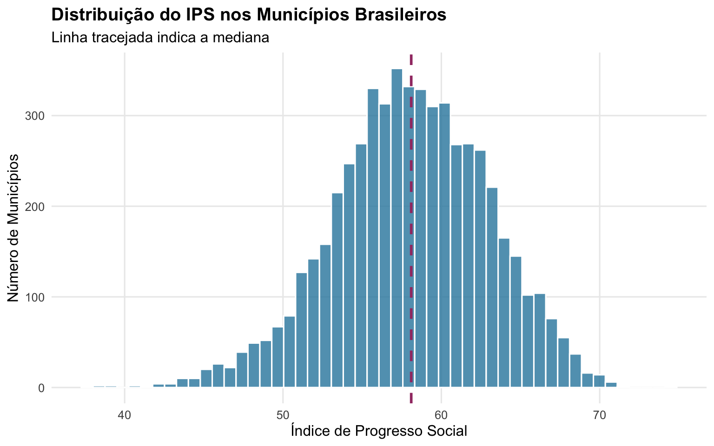
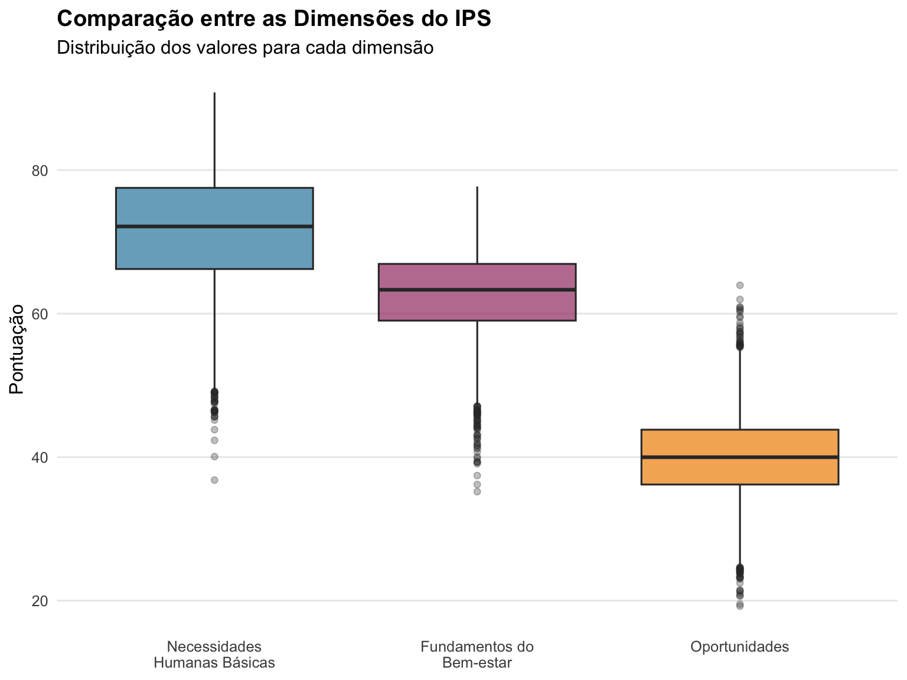
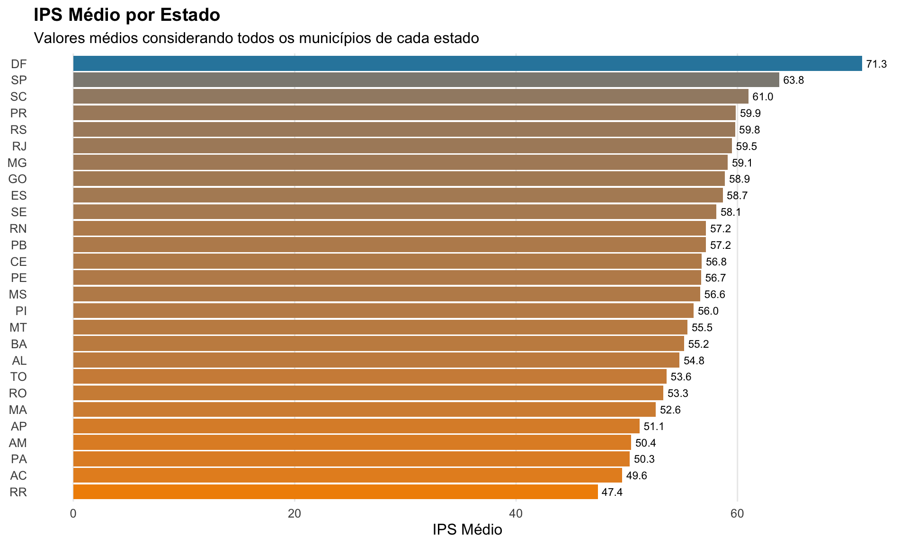

library(ggplot2)
library(dplyr)
library(tidyr)
library(gt)
library(gtExtras)
ips <- readr::read_csv(here::here("static/data/ips_brasil_municipios.csv"))Dados
O conjunto de dados contém informações sobre 5570 municípios brasileiros. Além do IPS geral, os dados incluem as três dimensões principais e diversos sub-componentes que permitem análises detalhadas sobre diferentes aspectos do desenvolvimento social.
basic_sum <- list(
min = \(x) min(x, na.rm = TRUE),
avg = \(x) mean(x, na.rm = TRUE),
med = \(x) median(x, na.rm = TRUE),
max = \(x) max(x, na.rm = TRUE),
non_na = \(x) sum(!is.na(x))
)
old_names <- names(ips)
new_names <- janitor::make_clean_names(old_names)
vl_names <- old_names
names(vl_names) <- new_names
tab_ips_summary <- ips |>
janitor::clean_names() |>
summarise(
across(where(is.numeric), basic_sum, .names = "{.fn}-{.col}")
) |>
pivot_longer(
cols = everything(),
names_to = c("statistic", "variable"),
names_sep = "-"
)
rm_vars <- c(
"codigo_ibge",
"populacao_2022",
"pib_per_capita_2021",
"area_km2"
)
tab_ips_summary <- tab_ips_summary |>
filter(!variable %in% rm_vars) |>
pivot_wider(
id_cols = "variable",
names_from = "statistic"
) |>
mutate(
variable_label = unname(vl_names[variable])
)Estatísticas Descritivas
A tabela abaixo apresenta estatísticas descritivas das principais dimensões do IPS. Os valores variam de 0 a 100, onde valores mais altos indicam melhor desempenho social.
tab_ips_subset <- tab_ips_summary |>
head(15) |>
select(-variable, -non_na) |>
select(variable_label, everything())
old_names <- names(tab_ips_subset)
new_names <- c("Variável", "Mínimo", "Média", "Mediana", "Máximo")
names(new_names) <- names(tab_ips_subset)
gt(tab_ips_subset) |>
cols_label(.list = new_names) |>
fmt_number(where(is.numeric), dec_mark = ",", decimals = 1) |>
opt_stylize(style = 6)| Variável | Mínimo | Média | Mediana | Máximo |
|---|---|---|---|---|
| Índice de Progresso Social | 37,6 | 58,1 | 58,1 | 74,5 |
| Necessidades Humanas Básicas | 36,8 | 71,5 | 72,1 | 90,8 |
| Fundamentos do Bem-estar | 35,2 | 62,7 | 63,3 | 77,7 |
| Oportunidades | 19,2 | 40,0 | 40,0 | 63,9 |
| Nutrição e Cuidados Médicos Básicos | 34,7 | 69,4 | 70,0 | 90,3 |
| Água e Saneamento | 11,3 | 68,5 | 70,8 | 99,3 |
| Moradia | 10,5 | 86,9 | 89,1 | 99,6 |
| Segurança Pessoal | 0,0 | 61,0 | 63,3 | 87,4 |
| Acesso ao Conhecimento Básico | 23,2 | 70,8 | 72,4 | 90,4 |
| Acesso à Informação e Comunicação | 12,4 | 59,7 | 60,9 | 91,0 |
| Saúde e Bem-estar | 20,9 | 56,4 | 56,9 | 76,2 |
| Qualidade do Meio Ambiente | 9,0 | 64,0 | 66,1 | 81,8 |
| Direitos Individuais | 5,2 | 28,5 | 27,1 | 74,9 |
| Liberdades Individuais e de Escolha | 1,2 | 40,6 | 40,2 | 80,9 |
| Inclusão Social | 1,3 | 60,8 | 62,4 | 99,1 |
Os dados revelam disparidades significativas entre municípios brasileiros. O IPS geral apresenta amplitude de mais de 30 pontos, variando entre o município com pior desempenho e o melhor. Nota-se que a dimensão “Oportunidades” apresenta os valores médios mais baixos, indicando que o acesso a direitos, liberdades e educação superior representa o maior desafio para o desenvolvimento social no país.
Análise
Distribuição do IPS
O gráfico abaixo mostra a distribuição do Índice de Progresso Social entre os municípios brasileiros.
ips_clean <- ips |>
janitor::clean_names()
ggplot(ips_clean, aes(x = indice_de_progresso_social)) +
geom_histogram(bins = 50, fill = "#2E86AB", alpha = 0.8, color = "white") +
geom_vline(
aes(xintercept = median(indice_de_progresso_social, na.rm = TRUE)),
linetype = "dashed",
color = "#A23B72",
linewidth = 1
) +
labs(
title = "Distribuição do IPS nos Municípios Brasileiros",
subtitle = "Linha tracejada indica a mediana",
x = "Índice de Progresso Social",
y = "Número de Municípios"
) +
theme_minimal(base_size = 12) +
theme(
plot.title = element_text(face = "bold"),
panel.grid.minor = element_blank()
)
A distribuição apresenta concentração em torno dos valores intermediários (50-60), com uma cauda longa de municípios com baixo desempenho social. Esta assimetria indica que, apesar de haver municípios com condições sociais comparáveis a países desenvolvidos, uma parcela significativa da população brasileira vive em localidades com severas deficiências em infraestrutura e serviços básicos.
Comparação entre Dimensões
Analisando as três dimensões do IPS, podemos identificar onde o Brasil apresenta maiores desafios.
ips_dimensions <- ips_clean |>
select(
municipio,
necessidades = necessidades_humanas_basicas,
bem_estar = fundamentos_do_bem_estar,
oportunidades
) |>
pivot_longer(
cols = -municipio,
names_to = "dimensao",
values_to = "valor"
) |>
mutate(
dimensao = case_when(
dimensao == "necessidades" ~ "Necessidades\nHumanas Básicas",
dimensao == "bem_estar" ~ "Fundamentos do\nBem-estar",
dimensao == "oportunidades" ~ "Oportunidades"
),
dimensao = factor(dimensao, levels = c(
"Necessidades\nHumanas Básicas",
"Fundamentos do\nBem-estar",
"Oportunidades"
))
)
ggplot(ips_dimensions, aes(x = dimensao, y = valor, fill = dimensao)) +
geom_boxplot(alpha = 0.7, outlier.alpha = 0.3) +
scale_fill_manual(values = c("#2E86AB", "#A23B72", "#F18F01")) +
labs(
title = "Comparação entre as Dimensões do IPS",
subtitle = "Distribuição dos valores para cada dimensão",
x = NULL,
y = "Pontuação"
) +
theme_minimal(base_size = 12) +
theme(
plot.title = element_text(face = "bold"),
panel.grid.minor = element_blank(),
panel.grid.major.x = element_blank(),
legend.position = "none"
)
O gráfico revela que a dimensão “Necessidades Humanas Básicas” apresenta, em geral, melhor desempenho, com mediana próxima de 70 pontos. Já a dimensão “Oportunidades” apresenta os valores mais baixos e maior variabilidade, refletindo desigualdades no acesso à educação superior, direitos individuais e inclusão social.
Desempenho Regional
Agregando os dados por estado, podemos observar padrões regionais no desenvolvimento social brasileiro.
ips_by_state <- ips_clean |>
group_by(uf) |>
summarise(
ips_medio = mean(indice_de_progresso_social, na.rm = TRUE),
n_municipios = n()
) |>
arrange(desc(ips_medio))
ggplot(ips_by_state, aes(x = reorder(uf, ips_medio), y = ips_medio)) +
geom_col(aes(fill = ips_medio), show.legend = FALSE) +
geom_text(
aes(label = sprintf("%.1f", ips_medio)),
hjust = -0.2,
size = 3
) +
scale_fill_gradient(low = "#F18F01", high = "#2E86AB") +
coord_flip() +
labs(
title = "IPS Médio por Estado",
subtitle = "Valores médios considerando todos os municípios de cada estado",
x = NULL,
y = "IPS Médio"
) +
theme_minimal(base_size = 12) +
theme(
plot.title = element_text(face = "bold"),
panel.grid.minor = element_blank(),
panel.grid.major.y = element_blank()
)
Os estados das regiões Sul e Sudeste lideram o ranking de desenvolvimento social, enquanto estados do Norte e Nordeste apresentam os menores índices. Esta distribuição espacial reflete desigualdades históricas e estruturais no desenvolvimento econômico e social brasileiro.
Melhores e Piores Desempenhos
As tabelas abaixo destacam os municípios com melhor e pior desempenho no IPS.
top_10 <- ips_clean |>
select(municipio, uf, indice_de_progresso_social,
necessidades_humanas_basicas, fundamentos_do_bem_estar, oportunidades) |>
arrange(desc(indice_de_progresso_social)) |>
head(10) |>
mutate(across(where(is.numeric), ~round(.x, 1)))
gt(top_10) |>
cols_label(
municipio = "Município",
uf = "UF",
indice_de_progresso_social = "IPS",
necessidades_humanas_basicas = "Necessidades",
fundamentos_do_bem_estar = "Bem-estar",
oportunidades = "Oportunidades"
) |>
tab_header(title = "Top 10 Municípios com Maior IPS") |>
opt_stylize(style = 6) |>
tab_options(table.font.size = px(12))| Top 10 Municípios com Maior IPS | |||||
|---|---|---|---|---|---|
| Município | UF | IPS | Necessidades | Bem-estar | Oportunidades |
| Gavião Peixoto (SP) | SP | 74.5 | 86.6 | 72.9 | 63.9 |
| Brasília (DF) | DF | 71.3 | 79.2 | 73.8 | 60.8 |
| São Carlos (SP) | SP | 71.0 | 79.9 | 74.3 | 58.7 |
| Goiânia (GO) | GO | 70.5 | 80.6 | 72.6 | 58.3 |
| Nuporanga (SP) | SP | 70.5 | 82.9 | 70.5 | 58.0 |
| Indaiatuba (SP) | SP | 70.5 | 84.2 | 74.3 | 52.9 |
| Gabriel Monteiro (SP) | SP | 70.4 | 90.8 | 71.7 | 48.8 |
| Águas de São Pedro (SP) | SP | 70.4 | 88.5 | 70.6 | 52.0 |
| Jaguariúna (SP) | SP | 70.3 | 83.7 | 73.7 | 53.4 |
| Araraquara (SP) | SP | 70.2 | 83.1 | 73.6 | 53.9 |
Os municípios com melhor desempenho social concentram-se nas regiões Sul e Sudeste, especialmente em áreas metropolitanas e cidades de médio porte com forte economia local.
bottom_10 <- ips_clean |>
select(municipio, uf, indice_de_progresso_social,
necessidades_humanas_basicas, fundamentos_do_bem_estar, oportunidades) |>
arrange(indice_de_progresso_social) |>
head(10) |>
mutate(across(where(is.numeric), ~round(.x, 1)))
gt(bottom_10) |>
cols_label(
municipio = "Município",
uf = "UF",
indice_de_progresso_social = "IPS",
necessidades_humanas_basicas = "Necessidades",
fundamentos_do_bem_estar = "Bem-estar",
oportunidades = "Oportunidades"
) |>
tab_header(title = "Top 10 Municípios com Menor IPS") |>
opt_stylize(style = 6) |>
tab_options(table.font.size = px(12))| Top 10 Municípios com Menor IPS | |||||
|---|---|---|---|---|---|
| Município | UF | IPS | Necessidades | Bem-estar | Oportunidades |
| Uiramutã (RR) | RR | 37.6 | 42.3 | 45.0 | 25.5 |
| Alto Alegre (RR) | RR | 38.4 | 36.8 | 48.3 | 30.1 |
| Trairão (PA) | PA | 38.7 | 49.7 | 36.2 | 30.2 |
| Bannach (PA) | PA | 38.9 | 51.1 | 41.2 | 24.4 |
| Jacareacanga (PA) | PA | 38.9 | 49.9 | 39.3 | 27.5 |
| Cumaru do Norte (PA) | PA | 40.6 | 46.3 | 40.1 | 35.5 |
| Pacajá (PA) | PA | 40.7 | 46.5 | 43.1 | 32.5 |
| Uruará (PA) | PA | 41.3 | 45.2 | 49.1 | 29.5 |
| Portel (PA) | PA | 42.2 | 47.6 | 42.5 | 36.6 |
| Bonfim (RR) | RR | 42.3 | 54.8 | 48.7 | 23.3 |
Os municípios com menor IPS enfrentam múltiplos desafios simultâneos, com baixo desempenho em todas as três dimensões do índice. Muitos destes municípios localizam-se em regiões remotas, com economia baseada em agricultura de subsistência e infraestrutura precária.
Principais Conclusões
A análise do Índice de Progresso Social nos municípios brasileiros revela importantes insights sobre o desenvolvimento social do país:
Disparidades Regionais: Existe forte concentração do desenvolvimento social nas regiões Sul e Sudeste, enquanto Norte e Nordeste apresentam desafios mais significativos, especialmente em áreas rurais e remotas.
Oportunidades como Gargalo: A dimensão “Oportunidades” apresenta os valores mais baixos e maior variabilidade, indicando que o acesso à educação superior, direitos individuais e inclusão social representa o maior desafio para o desenvolvimento social brasileiro.
Necessidades Básicas Parcialmente Atendidas: Apesar dos avanços, ainda há municípios com deficiências graves em água, saneamento, moradia e segurança pessoal, especialmente em áreas mais isoladas.
Heterogeneidade Municipal: A ampla variação entre municípios, mesmo dentro de um mesmo estado, sugere que políticas de desenvolvimento social precisam ser adaptadas às realidades locais, considerando as especificidades de cada território.
Implicações para Políticas Públicas
Os resultados apontam para a necessidade de:
Investimentos Regionalizados: Priorizar recursos federais e estaduais para municípios com baixo IPS, especialmente nas regiões Norte e Nordeste.
Foco em Oportunidades: Expandir o acesso à educação superior, fortalecimento de direitos e promoção da inclusão social, áreas onde o Brasil apresenta os maiores déficits.
Abordagem Multidimensional: Reconhecer que o desenvolvimento social vai além do crescimento econômico, exigindo políticas integradas que abordem simultaneamente necessidades básicas, bem-estar e oportunidades.
Monitoramento Contínuo: Utilizar o IPS como ferramenta de acompanhamento da efetividade de políticas públicas em nível municipal, permitindo ajustes e correções de rota.
Referências e Dados
- Dados: IPS-Brasil - Imazon
- Metodologia: Social Progress Index